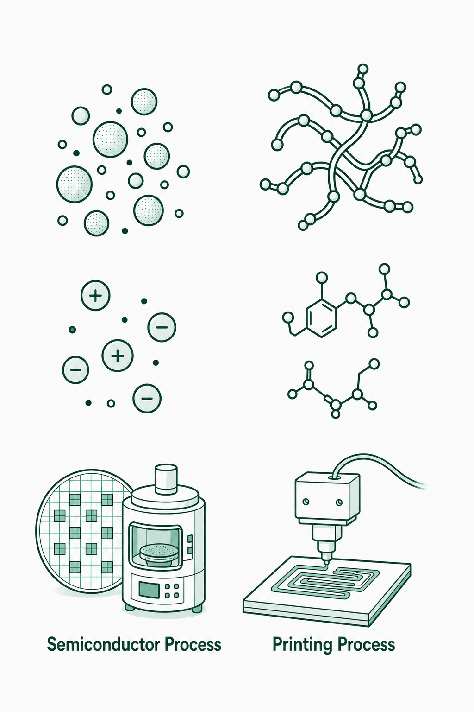

01
Materials & Processing
We create advanced materials through synthesis, processing, and manufacturing to deliver high-performance devices.
Explore this Area →Key Research Topics
- Materials synthesis & processing
- Batteries & energy storage
- Functional materials
- Interfaces, coatings & adhesion
- Energy harvesting
